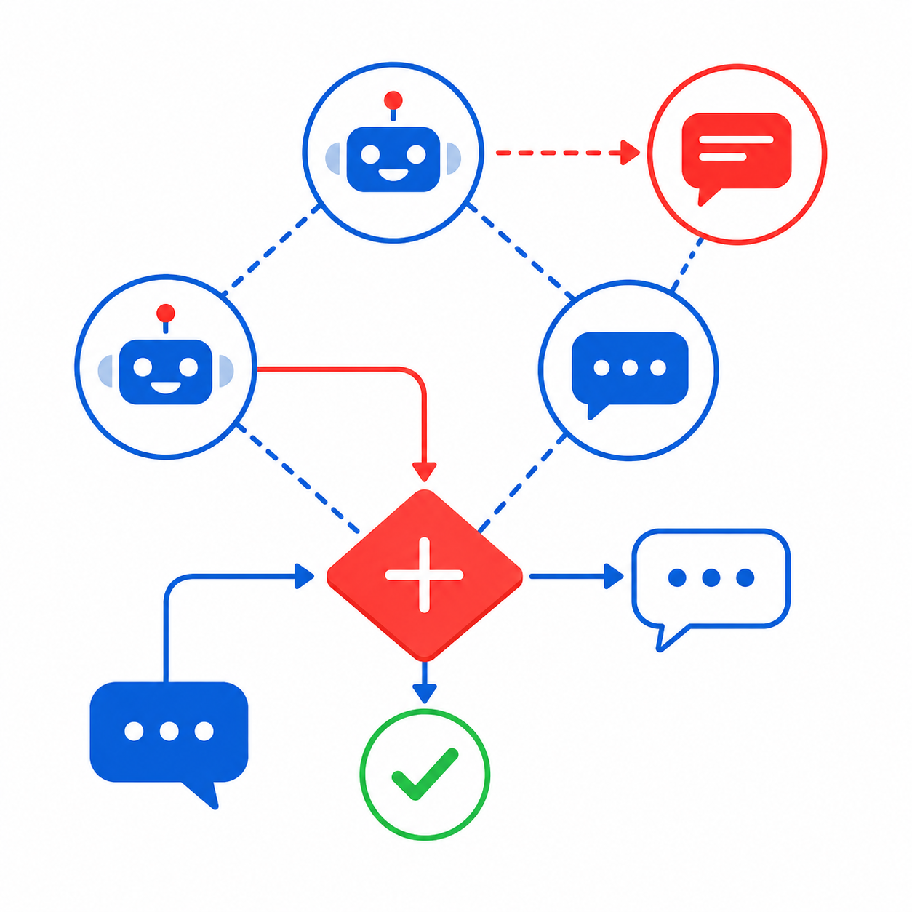
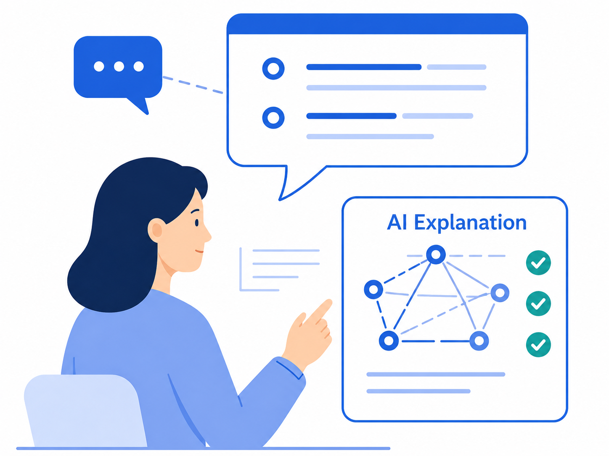
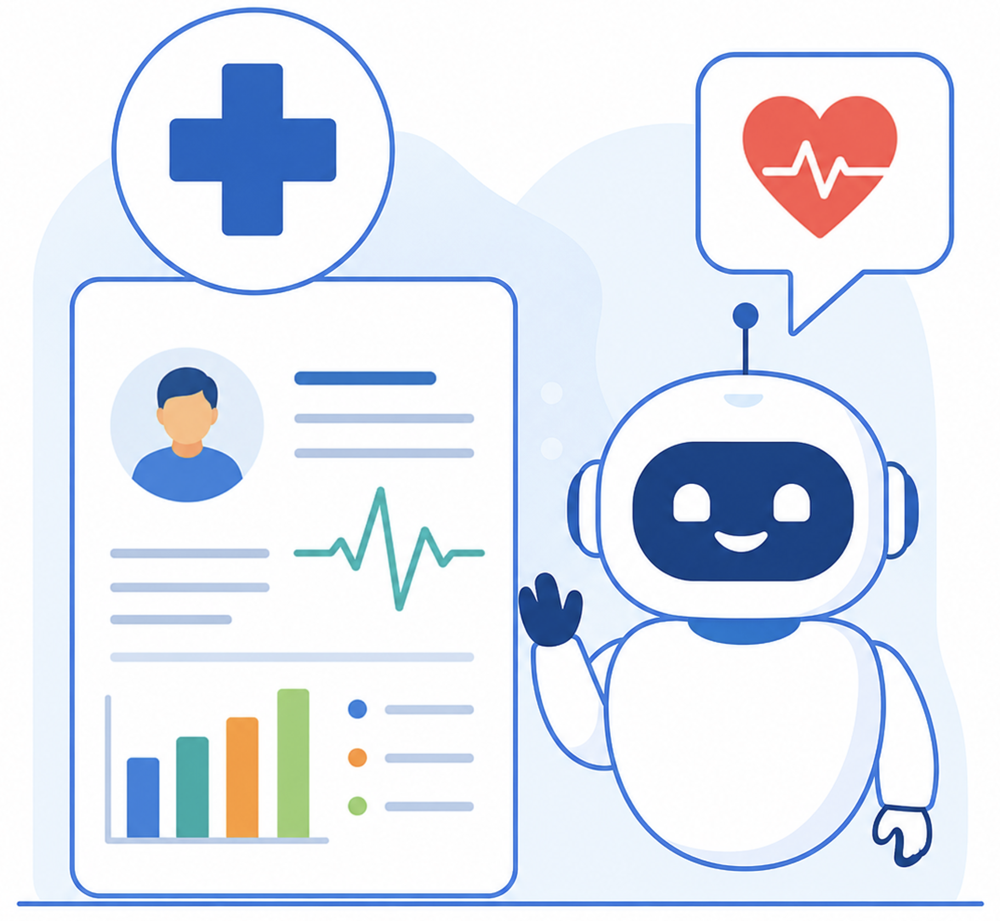

University of Arizona · College of Information Science
We study the design and deployment of AI systems at the interface of human and technical processes — leveraging LLMs and AI agents to solve sociotechnical problems.
Building AI we can TRUST.
Research Overview
Our work spans four connected areas — two methodological foundations and two application domains. Select an area to learn more.

We build and study LLM-driven multi-agent systems, examining their reasoning, capabilities, and failure modes.
Learn more →
We study how people interpret and rely on AI, focusing on transparency, reliability, and trust.
Learn more →
We analyze public experiences of treatments and policies, and build agents that support medical decision-making.
Learn more →We use crowdsourced data and LLMs to understand cities, studying community resilience, disaster impact, and equitable access.
Learn more →AI's hardest challenges are not only technical but also sociotechnical, arising from how capable models interact with the people who use them. Our Sociotechnical AI Lab (SAIL) studies that interaction directly, asking: What can today's AI systems do reliably, and where do they fail? How do people understand, trust, and adapt these systems in everyday settings like health and urban life? And how can we design agents that are not only capable, but transparent and useful to the communities they serve?
SAIL develops and evaluates large language models and AI agents, and applies them with human-generated data to address sociotechnical problems. Our two methodological areas are tightly coupled: Agent design shapes the questions we ask about human-AI interaction, and findings on interaction guide how we build AI agents.
We ground this framework in two application domains. In healthcare, we analyze public experiences of treatments and policies and build agents that make health information easier to find and act on. In urban settings, we use crowdsourced data and build models to study community resilience, disaster impact, and equitable access, identifying public needs that are otherwise hard to observe at scale. Ultimately, we aim to build trustworthy AI systems whose reliability and transparency make them dependable partners in addressing sociotechnical challenges.
Our Guiding Principle
Across study areas, we develop AI methods that infer human needs at scale and respond to them in ways that are:
Responding when it matters, at the speed real decisions require.
Grounded in fairness, safety, and accountability to people.
Transparent and interpretable, so people know why and when to rely on AI.
Delivering tools and methods that can be applied scalably across new settings and tasks — not one-off solutions.
Open about methods, limits, and the data that AI learns from.
We're an interdisciplinary lab at heart, and we welcome curious students and collaborators from all backgrounds—information science, computer science, public health, engineering, and beyond to join us!
Get in touch